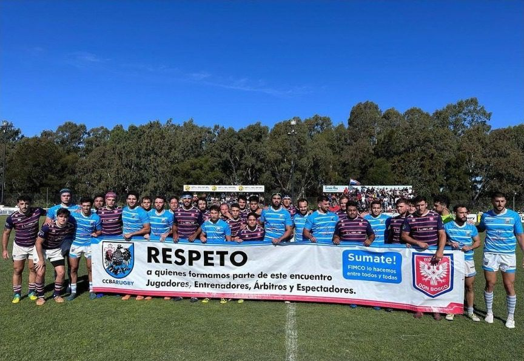

Don Bosco y Ciudad impulsan la campaña del respeto
Una campaña conjunta para cuidar el respeto dentro y fuera de la cancha.

En el partido entre Don Bosco y el Club Ciudad de Buenos Aires, por la tercera fecha del campeonato de Primera B 2023 de la URBA, jugado en Bernal, los dos clubes hicieron una acción conjunta a favor del respeto, alineada con el programa de Formación Integral y Mejora del Comportamiento (FIMCO) de la URBA. Ciudad y Don Bosco adhieren a ese programa y lo impulsan.
Los jugadores de ambos equipos se intercalaron para sostener un cartel con los escudos de los dos clubes e invitaron a toda la comunidad a sumarse a la campaña. La iniciativa incluyó a jugadores, entrenadores, árbitros y espectadores.
Las hinchadas de los dos clubes también se comprometieron a respetar a los rivales: la campaña fue más allá de la cancha.